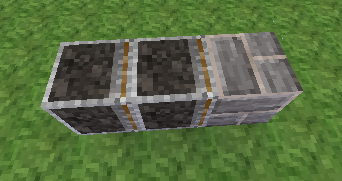
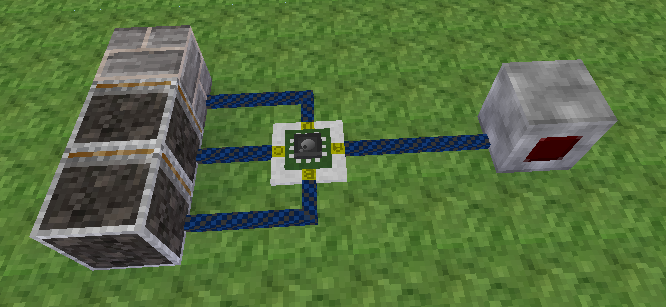
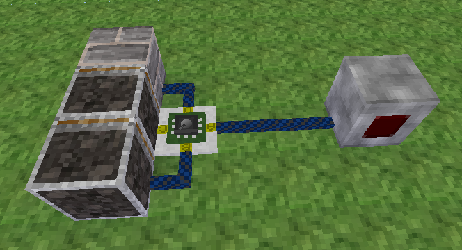
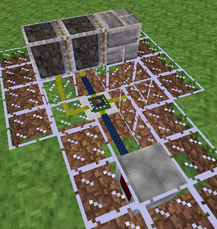

Mesecons Laboratory
Adventures in digital circuitry.
The Double Sticky Piston Driver
15/3/13 - Uberi
Difficulty level:


 (2/10)
(2/10)
The double sticky piston driver is an important component of many circuits that need to push nodes farther than just one block.
Here's a quick picture of what we'll be making:

What we have is two pistons, one in front of the other. Let's call them the front and back pistons.
When powered, it pushes a node forward by two blocks. When unpowered, it pulls a node backward by two blocks.
This is a pretty simple circuit, but there are a lot nuances to be aware of with regards to timing and ordering. For example, an extended piston cannot be pushed or pulled correctly since the stopper is out, and a sticky piston pulls when it receives an off signal, but not when it is dug.
Step 1: Design
The first step in building something is knowing what you want to do. Let's see what we're looking for when doing pushing:
- The back piston is powered, pushing the front piston and node forward one block.
- The front piston is powered, pushing the node forward one block.
Pretty simple for now. How about retracting?
- The front piston is unpowered, pulling the node back one block.
- The back piston is unpowered, pulling the front piston back one block.
- The front piston is powered, touching the node.
- The front piston is unpowered, pulling the node back one block.
The retraction is a bit more complex since sticky pistons can only pull one block at a time.
Step 2: Layout
First, we need to set up the basic components. In other words, the pistons and the node we are pushing/pulling:
On the left we have the rear piston, on the middle, the front piston. To the right we find the node itself. I used cobble as an example.
Step 3: Control
Now that the pistons are in place, there needs to be some way of converting the on/off signal into the sequences described in Step 1. There are a whole bunch of ways you can go about this, but I find that the easiest way is to simply use a Luacontroller and wire three of the four ports into their proper places:
You'll notice that I connected the fourth, unused port to a switch. This will be our signal. When turned on, the circuit will perform the extension sequence. When turned off, the circuit will perform the retraction sequence.
At the moment the circuit can be made significantly smaller, but we will cover that later.
Step 4: Programming
If you don't know much about Luacontrollers, you might find the Luacontroller tutorial handy.
We're going to first outline the basic actions the controller will perform:
if pin.a then --extend else --retract end
Then, work forwards through each sequence. I obtained the following as the final result:
if event.iid == "pull1" then
port.b = false
interrupt(0.2, "push2")
elseif event.iid == "push2" then
port.c = true
interrupt(0.2, "pull2")
elseif event.iid == "pull2" then
port.c = false
else
if pin.a then --extend
port.b = true
port.d = true
else --retract
port.d = false
interrupt(0.2, "pull1")
end
end
Congratulations! You now have a working double piston extender.
Step 5: Improvements
We're not done yet though. The circuit can still be made better. For example, we can remove the row of wires leading up to the pistons:
Or maybe a version embedded in the ground to gave a low footprint:
Here I've replaced a bit of the ground with glass to better view the circuitry.
The possiblities are endless. Play around with the concepts and see what you can come up with!
Downloads
All files are available under the same license as this article. The WEM schematics can be loaded using the //metaload command in WorldEdit.
Double sticky piston driver in WorldEdit-Meta format (WEM)
Low profile double sticky piston driver in WorldEdit-Meta format (WEM)

This work is licensed under a Creative Commons Attribution-ShareAlike 3.0 Unported License.